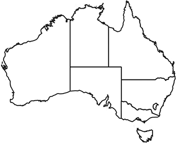

AUSTRALIAN POLITICAL SIMULATION v1
Senate:
States and territories by list
Select
Overview
New South Wales
Victoria
Queensland
Western Australia
South Australia
Tasmania
Australian Capital Territory
Northern Territory
STATE AND TERRITORY GUIDES

 AUSTRALIAN POLITICAL SIMULATION v1
AUSTRALIAN POLITICAL SIMULATION v1